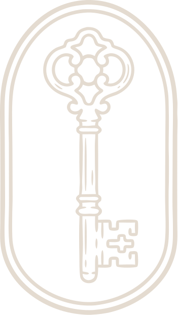
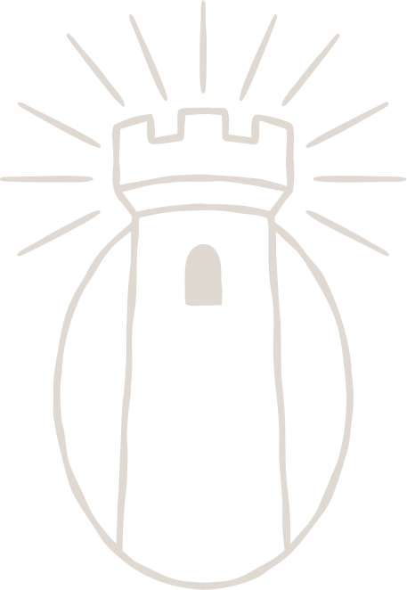
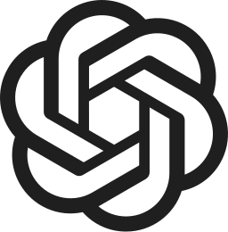

Chat
Frontier-scale open models for the work you don’t want uploaded to the public cloud, or to sit unencrypted on another company’s servers. Conversations exist on your local machine and inside your own TEE enclave, nowhere else.
A desktop app for encrypted AI chat, code, and agents. Privacy for your prompts, programming, and execution. Settled in ZEC.
Download the appFrontier-scale open models for the work you don’t want uploaded to the public cloud, or to sit unencrypted on another company’s servers. Conversations exist on your local machine and inside your own TEE enclave, nowhere else.
Coding assistance for your breakthrough sessions you wouldn’t want curious devs on the other side to peruse. Your codebase stays sealed; the intelligence comes to you.
Fully-private agents who act on your behalf while keeping your sensitive information private. Privacy extends to their actions, interactions, and financial activity.

Prompts are encrypted before they leave your machine.

Inference runs only inside verified hardware. Verification is on your side, not on trust.
Zero retention, provably. There is no record to produce, for anyone.
The system proves what it did without seeing what you said.

ChatGPT~ denotes availability as a paid, opt-in tier.
Choose the tools, allocate the capital, and define the limits. Your agent works within them.
Astrea connects shielded ZEC to programmable markets on Ethereum, so your agent can put capital to work while keeping your context and strategy private.
Your agent executes and settles privately. Astrea proves the resulting state changes while keeping the underlying private information shielded.
Agents that can act, transact, and coordinate privately. Powered by Astrea. Starting with AxiomAI.
AxiomAI is a private AI desktop app that lets you chat with leading models through a simple, secure interface.
The model picker shows every model currently available to your account. Model availability and capabilities may vary by provider.
Yes. AxiomAI encrypts your prompts before they leave your device. Responses are authenticated and decrypted locally.
Cost depends on the model you choose and how much you use it. The model picker shows current input and output pricing where available.
AxiomAI verifies the provider's hardware and software environment, then encrypts your prompts and responses end to end. The AxiomAI relay handles routing and billing but is designed never to see your conversation content in plaintext.
Traditional AI services require you to trust the provider with your conversation content. AxiomAI instead verifies the environment running the model and encrypts your conversation so it can only be decrypted inside that verified environment. This provides verifiable privacy rather than relying only on a provider's promises.
The desktop source repository is currently private. You can download the app for macOS, Windows, or Linux and verify each release file against its published SHA-256 checksum.